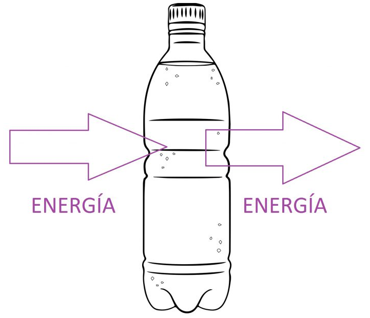

<div class="logo">
     
 </div>
     <main>
         <h2>  Glosario Pensamiento Sistematico</h2> 
      <h4> Autores: Brayan Stiven Gonzalez Gomez, Laura Vanesa Farafan Mayorga</h4> 
     </main>
    <header>               
         <nav>
              <a href="index.html" class="nav-link">Inicio</a>
              <a href="index_1.html" class="nav-link">Glosario Fundamentos Ingenieria</a>
              <a href="index_2.html" class="nav-link">Glosario Pensamiento Algoritmico</a>
              <a href="index_3.html" class="nav-link">Glosario Pensamiento Sistematico</a>
              <a href="Formulario.html" class="nav-link">Formulario</a>
         </nav>
         <link rel="stylesheet" href="css/estilos.css">
</header>
</body>
<section2>
    <details>
        <summary>Sistema</summary>
        <p>Un conjunto de entidades caracterizadas por ciertos atributos, que tienen relaciones entre sí y están localizadas en un cierto ambiente, de acuerdo con un cierto objetivo.
             Ejemplo:
             Sistema Circulatorio:
             Conjunto de órganos y vasos sanguíneos que transportan sangre, nutrientes, gases y desechos a través del cuerpo.
             Componentes: Corazón, vasos sanguíneos (arterias, venas, capilares), sangre.
             Propósito: Mantener el flujo de sangre para asegurar el suministro de oxígeno y nutrientes a los tejidos y la eliminación de desechos.<br>
             <br></p>
    </details>
    <details>
        <summary>Sistema Abierto</summary>
        <p>Se trata de sistemas que importan y procesan elementos (energía, materia, información) de sus ambientes y esta es una característica propia de todos los sistemas vivos. Que un sistema sea abierto significa que establece intercambios permanentes con su ambiente,
             intercambios que determinan su equilibrio, capacidad reproductiva o continuidad, es decir, su viabilidad (entropía negativa, teleología, morfogénesis, equifinalidad).
             Ejemplo
             Sistema Social:
             Ejemplo: Una empresa
             Descripción: Las empresas son sistemas abiertos que interactúan con el mercado, los clientes, los proveedores y otros actores externos. Reciben recursos (como materiales y mano de obra) y envían productos y servicios al mercado. Además, las empresas deben adaptarse a cambios en el entorno económico y social.<br>
             <br></p>
    </details>
    <details>
        <summary>Sistemas Cerrados</summary>
        <p>Un sistema es cerrado cuando ningún elemento de afuera entra y ninguno sale fuera del sistema. Estos alcanzan su estado máximo de equilibrio al igualarse con el medio (entropía, equilibrio). En ocasiones el término sistema cerrado es también aplicado a sistemas que se comportan de una manera fija, rítmica o sin variaciones, como sería el caso de los circuitos cerrados.
             Ejemplo
             Termos o Botellas de Vacío:
             Un termo o una botella de vacío es un buen ejemplo de un sistema cerrado en términos prácticos. Está diseñado para minimizar el intercambio de calor (energía) con su entorno, manteniendo así la temperatura de su contenido durante un período prolongado. Aunque el termo intercambia energía térmica con el entorno, no permite el intercambio de materia.<br>
             <br></p>
    </details>
    <details>
        <summary>Sistema Natural</summary>
        <p>Los sistemas naturales abundan en la naturaleza. La ecología de la vida es un sistema natural, y cada organismo es un sistema natural especial. El sistema del agua del mundo, por lo menos antes que el hombre lo modificara, era un sistema, como también es el sistema solar.
             Ejemplo:
             Ecosistema Forestal:
             Descripción: Un ecosistema forestal incluye árboles, plantas, animales, hongos, bacterias, y otros organismos que interactúan entre sí y con su entorno.
             Proceso: Los árboles realizan la fotosíntesis, produciendo oxígeno y alimento para otros organismos. Los animales herbívoros comen las plantas, y los descomponedores descomponen la materia orgánica, reciclando nutrientes.<br>
             <br></p>
    </details>
    <details>
        <summary>Sistema Artificial</summary>
        <p>Un sistema artificial es un conjunto de elementos y procesos creados por el ser humano con el propósito de realizar una función específica o resolver un problema. A diferencia de los sistemas naturales, los sistemas artificiales no existen de manera natural y requieren intervención y diseño humano para su creación y funcionamiento.
             Ejemplo
             Sistema de Transporte:
             Ejemplo: Red de Metro
             Descripción: Un sistema de metro está compuesto por trenes, vías, estaciones, señales y sistemas de control que permiten el transporte de personas en áreas urbanas.
             Propósito: Facilitar el transporte rápido y eficiente de pasajeros dentro de una ciudad.<br>
             <br></p>
    </details>
    <details>
        <summary>Sistema Determinístico</summary>
        <p>Un sistema determinístico es un tipo de sistema en el que el comportamiento futuro se puede predecir con certeza a partir de su estado actual y las condiciones iniciales. En otras palabras, dado un conjunto específico de condiciones iniciales, el sistema siempre producirá el mismo resultado o salida bajo las mismas condiciones. Los sistemas determinísticos siguen reglas y leyes que permiten prever con precisión su evolución.
             Ejemplo
             Máquinas de Expendedoras:
             Ejemplo: Una máquina de café.
             Descripción: Si introduces una cierta cantidad de dinero y seleccionas una opción específica, la máquina de expendedora siempre entregará el mismo tipo de café. Las reglas del funcionamiento de la máquina son fijas y el resultado es predecible.<br>
             <br></p>
    </details>
    <details>
        <summary>Sistema Probabilístico</summary>
        <p>Un sistema probabilístico es un tipo de sistema en el que el comportamiento futuro no se puede predecir con certeza, sino que se describe en términos de probabilidades. En estos sistemas, aunque se pueden conocer las probabilidades de diferentes resultados, el resultado específico no es determinista y puede variar cada vez que el sistema se observe o se ejecute.
             Ejemplo
             Lanzamiento de Dados:
             Ejemplo: Lanzar un dado justo de seis caras.
             Descripción: Cada vez que lanzas el dado, el resultado es incierto, pero puedes calcular la probabilidad de que salga cada cara (1/6). La aleatoriedad del lanzamiento hace que el resultado específico no se pueda predecir con certeza.<br>
             <br></p>
    </details>
     <details>
<summary>sistema Gestalt:</summary>
<article>
<p>La Gestalt es una teoría psicológica que se centra en la percepción y la experiencia humana, especialmente en cómo las personas organizan y perciben la información visual. 
Ejemplo
Un triángulo formado por tres ángulos abiertos (o sea, con las líneas incompletas) será percibido por la mayoría de las personas como un triángulo completo.
</p> 
</article>
</details> 	

<details>
<summary>sistema equinifinidad </summary>
<article>
<p>La equifinidad es un concepto utilizado en la teoria de sistema y la cibernetica para describir la capacidad de un sistema para alcanzar un estado final o objetivos a traves de diferentes de diferentes caminos o procesos</p> 
</article>
</details> 
           
<details>
<summary> sinergia: </summary>
<article>
<p>La sinergia es el concepto que describe cómo la combinación de elementos o partes produce un resultado superior al que se obtendría sumando los esfuerzos individuales de cada uno por separado. 
Ejemplo
En un equipo de trabajo, la sinergia ocurre cuando los miembros colaboran de manera efectiva, combinando sus habilidades y conocimientos para alcanzar un objetivo común de manera más eficiente y con mejores resultados que si cada uno trabajara por separado.
</p> 
</article>
</details>           

<details>
<summary> recursividad: </summary>
<article>
<p> La recursividad es una propiedad de los sistemas, procesos o funciones que se refiere a la capacidad de llamarse a sí mismos o de repetirse de manera autorreferencial. En otras palabras, un sistema o proceso recursivo es aquel que se utiliza a sí mismo como parte de su propio proceso o función.
</p> 
</article>
</details>	

<details>
<summary> morfogénesis: </summary>
<article>
<p> La morfogénesis es el proceso biológico por el cual un organismo o una estructura adquiere su forma específica durante el desarrollo. 
Ejemplo 
Durante el desarrollo embrionario de un ser humano, la morfogénesis es lo que guía la formación de órganos como el corazón, los pulmones y el cerebro.
</p> 
</article>
</details> 

<details>
<summary> Organicidad </summary>
<article>
<p> La organicidad se refiere a la calidad o estado de ser orgánico, es decir, relativo a los seres vivos o a los sistemas que presentan características similares a los seres vivos. En este sentido, la organicidad implica la presencia de estructuras, procesos y relaciones que se encuentran en los sistemas biológicos.
</p> 
</article>
</details> 

<details>
<summary> Isomorfismo: </summary>
<article>
<p> El isomorfismo es un concepto que se refiere a una correspondencia estructural o una relación uno a uno entre dos estructuras que mantienen la misma forma o propiedades. 
Ejemplo 
En programación, dos estructuras de datos que tienen la misma organización y permiten las mismas operaciones pueden ser consideradas isomorfas, aunque se implementen de manera diferente.
</p> 
</article>
</details> 

<details>
<summary> homeomorfismo </summary>
<article>
<p> Un homeomorfismo es un concepto matemático que se refiere a una correspondencia entre dos espacios topológicos que preserva la estructura topológica de los espacios. En otras palabras, un homeomorfismo es una transformación que mantiene las propiedades topológicas de los espacios, como la conectividad, la compacidad y la dimensionalidad. Formalmente, un homeomorfismo es una función continua y biyectiva entre dos espacios topológicos, X e Y, que tiene una función inversa continua. Esto significa que la función y su inversa son ambas continuas, y que cada punto en X se corresponde con un punto único en Y, y viceversa.</p> 
</article>
</details> 

<details>
<summary> homeóstasis </summary>
<article>
<p> es el proceso por el cual un organismo mantiene un equilibrio interno constante a pesar de los cambios en el entorno externo. 
Ejemplo 
Cuando la temperatura corporal aumenta debido al calor externo, el cuerpo activa mecanismos como la sudoración para enfriarse. 
</p> 
</article>
</details> 
    
</section2>


<footer>
    <div class="footer-text">
    <p>&copy; Universidad Cundinamarca  | Todos los derechos reservados | 2024 </p>
    </div>
    
    </footer>
